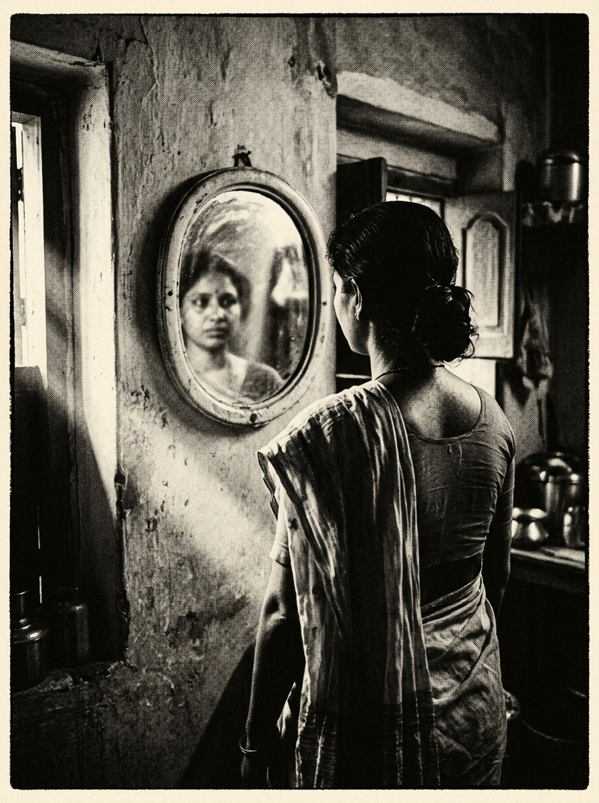
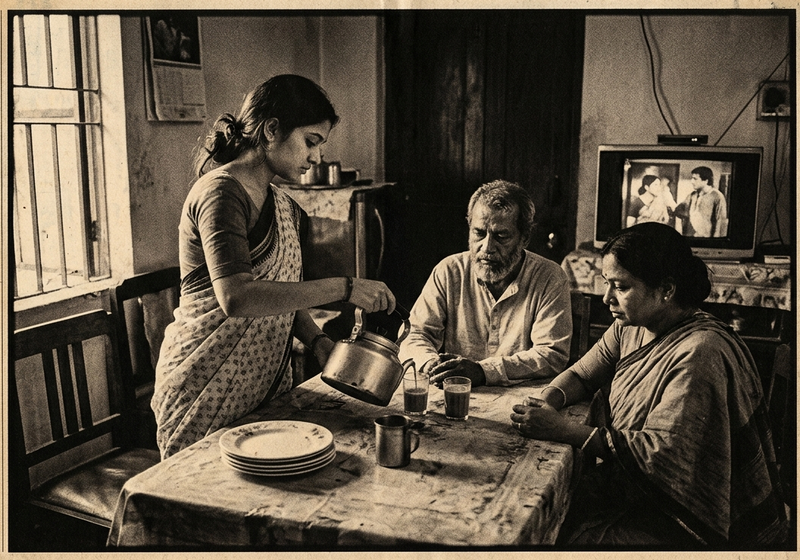
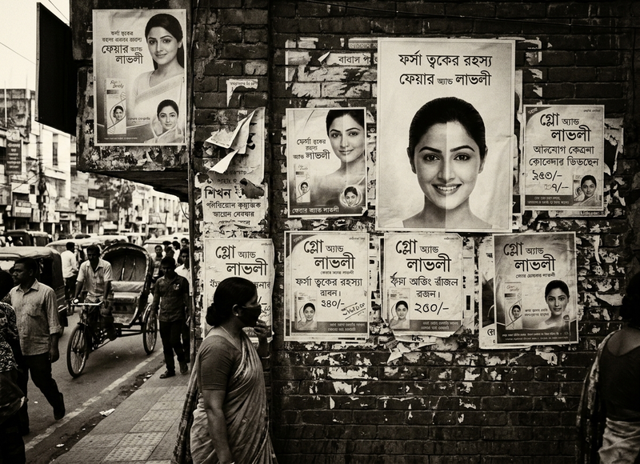
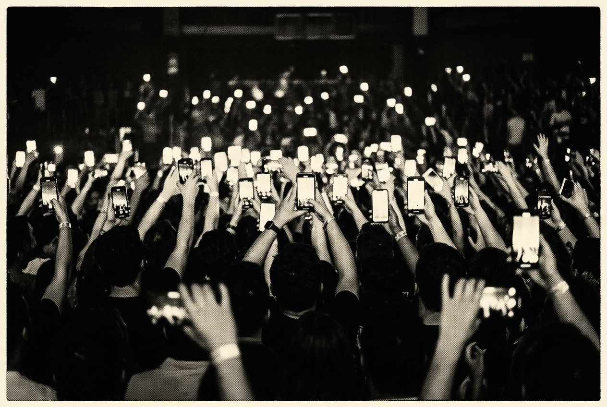
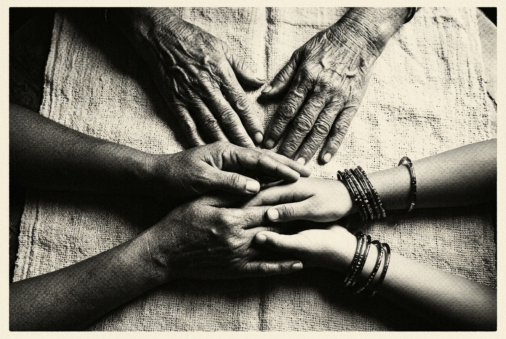
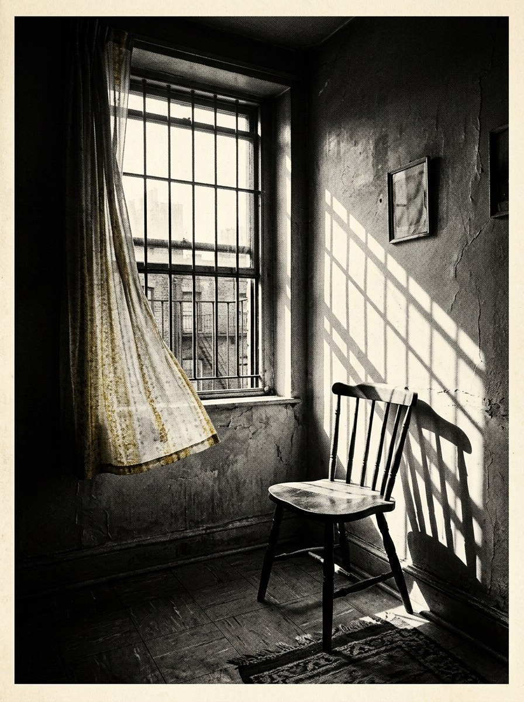
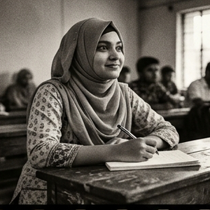
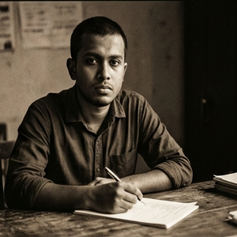
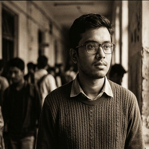
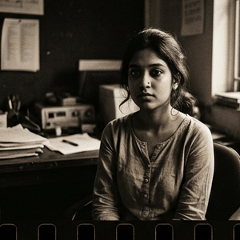

Misogyny
What we perceive & what we overlook. A critical exploration of gender, power, social norms and everyday life in Bangladesh.
“Who decided what a good woman should be?”
This magazine begins with expectations - not violence.

Editorial Board & Credits
A student-run critical journal on the misogyny that is visible, and the misogyny that ordinary life teaches us to overlook. Theory, history, cases, and voices, printed on purpose.
Paper: 90gsm warm newsprint (#f4efe3) / Inks: Carbon black & Vermilion red
Typefaces: Instrument Serif, Source Serif 4, IBM Plex Mono, Noto Serif Bengali
The quiet kind
We usually recognize misogyny when it is loud - harassment, violence, abuse, openly hostile language. This issue is about the other register.
What about the advice that tells a girl how to dress? The expectation that a wife should sacrifice more? The assumption that a mother should put everyone before herself? The judgment of a woman who speaks too loudly, stays out too late, chooses not to marry, or prioritizes her career?
These practices may not always appear discriminatory. Sometimes they arrive dressed as tradition, protection, respectability, responsibility - or simply “the way things are.”
This magazine asks what happens when such expectations are repeated so often that they become difficult to recognize as social constructions at all.
More importantly, we examine a difficult question: can women themselves reproduce misogynistic norms? Our answer is yes - but this does not mean blaming women for patriarchy. It means examining how social norms are learned, internalized, negotiated and passed from one generation to another.
Through five theoretical perspectives, historical context, contemporary cases, interviews and critical reflection, The Other Margin looks at the misogyny that is visible - and the misogyny that ordinary life teaches us to overlook.
A working definition
The dictionary will tell you misogyny means hatred or contempt toward women. Our magazine uses a broader analytical understanding: misogyny can operate through hostility, devaluation, policing and punishment directed at women because they are women - especially when they challenge gendered expectations.
harassment
threats
violence
sexist abuse
shaming / judging / controlling
stereotyping / victim blaming
policing clothing / policing sexuality
questioning women’s choices
The quiet column is longer. That is the point.
Not the same thing
These three words get used interchangeably. They shouldn’t be. Each names a different level of the problem.
Patriarchy
The broader system of gendered power - the architecture in which all of this operates.
It predates any individual and outlives any individual’s intentions.
Sexism
Gender-based prejudice, stereotyping or unequal treatment - the assumptions that assign value by gender.
Sexism can be held casually, even affectionately, and still organize lives.
Misogyny
Hostility, contempt, devaluation, policing or punishment directed toward women.
Its sharpest edge appears when women step outside assigned roles.
“How does a social system turn gender expectations into everyday behaviour?”
Ordinary is not
the same as harmless
We immediately recognize the loud register: physical violence, sexual harassment, explicit insults, threats, workplace discrimination, online abuse, sexual objectification.
But listen to what circulates without a name attached. Each of the sentences opposite may sound ordinary. Ordinary does not automatically mean harmless - it usually means rehearsed.
“Good girls don’t behave like that.”
“A woman should know how to adjust.”
“Why was she outside so late?”
“A married woman should prioritize her family.”
“Girls shouldn’t talk so loudly.”
“Women should dress respectfully.”
“She is too ambitious.”
Who is expected to adjust? Who defines what is “respectable”? Would the same rule apply to a man? What happens when a woman refuses?

Plate 01 - Morning, Dhaka. The street notices everything and judges quietly.
Nobody in this photograph is doing anything remarkable. That is precisely where the norms live.
The wheel nobody steers
A child learns gender expectations.
Family, media, peers and institutions repeat them.
The expectation starts feeling natural.
People apply the standard to themselves.
People judge those who violate it.
The norm is passed to others - back to socialization.
enforces
itself
The central insight:
A social norm becomes powerful when it no longer needs constant enforcement - because people begin enforcing it themselves.
Once a cycle reaches self-enforcement, no conspirator is required. Each turn looks like common sense.
This is where Foucault becomes essential: disciplinary power works through surveillance, normalizing judgment and self-regulation - not only direct force. See page 11.
Five lenses, one problem
Instead of five biographies, five questions. Each thinker hands us a different magnification for the same everyday life.
Simone de Beauvoir
“Who gets to define ‘woman’?”
R. W. Connell
“How does gender organize power?”
Michel Foucault
“How do we learn to regulate ourselves?”
Stuart Hall
“How do representations make norms appear normal?”
Deniz Kandiyoti
“Why might women negotiate with a system that constrains them?”
Taken together, these five perspectives let us examine misogyny at different levels - the definition of woman, the structure of gender, the discipline of the self, the manufacture of the normal, and the bargains struck inside constraint.
In everyday life, this appears whenever a woman is introduced through her relations instead of herself: the good daughter, the good wife, the good mother. Each phrase contains a hidden preposition - good to whom?
The question becomes: is she being recognized for who she is - or for how well she performs the identity society has assigned to her?
A GIRL
Be modest.
A WIFE
Adjust.
A MOTHER
Sacrifice.
A DAUGHTER
Obey.
The issue is not that caring, modesty or family responsibility are inherently bad. The issue is why these qualities become moral requirements specifically for women.
provider / leader
strong / independent
decision-maker
caregiver / supporter
emotional / domestic
accommodating
These expectations create unequal social value. Watch the same behaviour get two names:
A confident man may be called assertive. A confident woman may be called aggressive.
A career-focused man may be called ambitious. A career-focused woman may be told she is neglecting her family.

Plate 02 - The audience moved indoors. She checks herself before anyone else must.
SOCIETY WATCHES / I ANTICIPATE JUDGMENT / I WATCH MYSELF / I REGULATE MYSELF
“If people learn to police themselves, does society still need to police them directly?”

The "Lokkhi Bou" Archetype
In classic Bangladeshi television serials and telefilms, virtuous womanhood is systematically encoded as self-effacing domestic service, emotional restraint, and silent endurance. Outspoken or ambitious women are framed as disruptive to family harmony. Through decades of primetime repetition, this trope naturalizes female compliance as moral virtue.

The Fairness Imperative
Billboard and broadcast advertising across Dhaka markets skin lightening as a prerequisite for self-worth, respectability, and career advancement. Drawing on Hall’s "Spectacle of the Other", dark skin is encoded as a personal lack to be remedied, while fairness is encoded as social mobility. Commercial media does not merely sell cream; it manufactures racialized gender norms.
Media texts encode dominant cultural ideologies. When audiences consume these images without critical resistance, they adopt the "preferred reading" - accepting that quiet, self-sacrificing behavior is what a woman naturally is, rather than what culture repeatedly demands she become.
A representation does not need to lie. It only needs to repeat until cultural construction is mistaken for nature.
Does conformity always mean agreement?
Not necessarily. A woman may follow a traditional expectation because it steadies her life - while privately finding the rules unjust.
Therefore: accommodation can be a strategy for survival, not proof that oppression is freely accepted. This is why we should be careful before judging women who conform to patriarchal expectations. The bargain is made under conditions the bargainer did not set.
One woman, five theories
Scenario: a woman chooses to continue her career after marriage. Watch what each lens notices.
Why is a “good wife” expected to prioritize family over self-development - and who defined “good”?
Why is domestic care disproportionately associated with femininity, while paid work is coded masculine?
Does she begin limiting herself - dressing, speaking, staying later than she should - because she anticipates judgment?
How have media representations already constructed “the ideal wife” she is measured against?
Could accommodation or negotiation with expectations be a strategy for security within a patriarchal system?
One social practice can contain construction, power, discipline, representation and negotiation - simultaneously.
When women police women
Do not make this argument
“Women are the real problem.”
A lazy conclusion that flatters the structure by blaming its casualties.
Ask instead
What happens when women reproduce the same gendered standards that constrain women?
A woman can participate in: sexual objectification / body shaming / slut-shaming / appearance policing / moral judgment. Misogynistic norms can circulate between women as well as between men and women.

Plate 03 - The jury that never leaves the room. Each screen a small courtroom.
Reproduction is not the same as origin. A woman reproducing a misogynistic norm does not mean she created the broader gender structure.
The grandmother effect
Grandmother
“Girls should behave properly.”
Mother
“This is how a respectable woman behaves.”
Daughter
“This is simply normal.”
Can someone who has experienced gender inequality also reproduce gender inequality?
Yes. Because people can simultaneously be constrained by a norm and be agents who reproduce that norm. This is not necessarily hypocrisy - it can be the ordinary arithmetic of socialization + internalization + normalization.
The daughter who says “this is simply normal” is not lying. She is reporting her data.

Plate 04 - What is passed down is not only jewellery.
Which sentence from the previous generation do you still repeat - and would you defend it, or only perform it?
Protection,
or control?

Plate 05 - The grill keeps things out. It also keeps things in.
A parent says: “I’m restricting you for your own safety.”
We should not immediately dismiss the concern. Women genuinely face safety risks, and love often stands behind the lock on the door.
But watch what happens to the question being asked. Instead of “How can we make public spaces safer?” it becomes “Why was she outside?” Instead of “How do we prevent harassment?” it becomes “Why was she dressed like that?”
The risk is real - but the remedy moves, quietly, from the conditions that produce insecurity to the woman who must live with it.
When does protection become control?
Not every protective action is misogynistic. Protection becomes problematic when women’s freedom is disproportionately restricted while the underlying conditions producing insecurity remain unchallenged.
Who gets to choose what a woman wears?
The real question is not the garment. The real question is agency - who decides, and at what cost of refusal.
Agency. A religious, cultural or personal decision that belongs to her.
Coercion. The choice has been removed, whatever the garment means to others.
Social policing. The norm enforces itself through her neighbours’ mouths.
Social policing again. The “liberal” direction of pressure is still pressure.
The issue is not simply what a woman wears. The issue is whether she has meaningful agency over her choice.
This framing avoids reducing women’s experiences to a simplistic binary - traditional = oppressed, modern = free. Both directions of pressure can confiscate the same thing.
Can women lead without being judged as women?
A male leader displaying firmness may be called strong.
A female leader displaying the same firmness may be called aggressive.
This connects directly with Connell (the gender order), Beauvoir (the “Other”) and Hall (the repeated image). Political criticism is legitimate; gendered judgment is a different act wearing criticism’s clothes.
“When does political criticism become gendered judgment?”
Who owns a woman’s image?
A woman may use her body or sexuality in artistic expression. But audiences may interpret her body however they choose. So the honest questions are paired, not single:
Agency - or objectification?
Expression - or sexualization?
Choice - or pressure?
who created it,
why it was created,
whether the woman had agency,
how audiences interpret it,
whether economic or social pressures shaped the choice.
A woman’s visibility does not automatically mean she has lost agency - and sexualization by an audience does not automatically mean the woman’s expression itself was misogynistic.
Our voices: Data & lived experience

“I stopped using animated hand gestures during department seminars. A senior male student quietly remarked that I sounded 'unnecessarily intense.' I noticed myself lowering my voice and smiling more just to keep people comfortable.”
“Curfew is the clearest double standard. My brother returns at 11 PM and my parents call it ambition. My sister delayed by 30 minutes in Dhaka traffic causes an immediate family conference on modesty and safety.”
“Older women police younger women because they survived under harsh patriarchal bargains. When a young woman ignores those restrictions without punishment, it retroactively threatens everything the older generation gave up to survive.”
“Men frequently say 'I restrict you because I care about your protection.' But when protection requires eliminating someone's independence and mobility, it is no longer protection - it is private jurisdiction.”
The social ecosystem
Normalization
These are not eight isolated causes. They are one weather system. Each factor feeds the next, and the whole arrangement turns from eight separate pressures into one climate that feels like common sense.
“Misogyny rarely survives through one institution alone. It becomes durable when multiple social environments repeat similar expectations.”
Compare the wheel on page 07: the ecosystem is the cycle drawn from the inside - what it feels like to live in it.
Five opinions, five provocations
“What is one thing women are expected to tolerate that men are not?”
[ Real response. ]
“Can a woman enforce a norm that disadvantages women?”
[ Real response. ]
“When does protection become control?”
[ Real response. ]
“Is tradition a justification for gender inequality?”
[ Real response. ]
“Can choosing a traditional role still be an act of agency?”
[ Real response. ]
Again - real responses only. Where an answer surprises us, we print it intact.
The uncomfortable question
Yes - but not in the way you might think.
This creates a paradox:
Victim + participant, at the same time.
And that is precisely what makes misogyny difficult to dismantle: the system recruits its own constrained subjects as its wardens, and punishes them if they refuse the post.
Reproducing a system is not the same as creating the system.
But are we calling everything misogyny?
Over-expansion
If every gender difference becomes misogyny, the concept loses meaning.
Victim blaming
Saying women reproduce misogyny can accidentally shift responsibility onto women.
Agency
Not every woman who chooses a traditional role is necessarily oppressed.
Cultural complexity
Not every tradition is automatically misogynistic.
We do not argue that every gender norm is misogyny. We ask when gendered expectations become mechanisms of devaluation, policing, exclusion or punishment.
We analyze women’s participation in reproducing norms without treating women as responsible for creating the structural conditions in which those norms operate.
Breaking the cycle
GENDER-TRANSFORMATIVE PARENTING
Don’t teach “girls do this, boys do that.” Give children equal responsibilities and opportunities.
CRITICAL MEDIA LITERACY
Teach people to ask: who is being represented? Who is missing? What kind of woman is presented as “normal”?
PARTICIPATORY EDUCATION
Don’t simply tell people gender equality is important. Create conversations where people can question the norms they inherited.
SUPPORT WOMEN WHO CHALLENGE NORMS
If challenging a norm produces social punishment, women need social support to make resistance sustainable.
CHANGE THE QUESTION
Instead of “Why doesn’t she behave properly?” - ask “Who defined what ‘proper’ means?”
Every intervention above attacks one turn of the wheel from page 07. Pick your turn.
The Selfish
of Mine
MEHEDI HASAN
Lead designer /
columnist, poems
The mirror reappears. This time it speaks back.
Mine is kinder than theirs.
Their hearts are colder than December air,
Softness grows for hidden profit.
If no, evil comes out.
I would read the face of society.
Reality wears the double faces,
The truth behind their similes would show.
I stand in reflection
A mirror showing them,
Not big me.
It walking like an unseen shadow
While honesty sleeps under the heavy dusty.
I have measured out mine.
Mine is not truly mine alone.
Me only cruel, others kind in name
Innocent me, brutal to theirs.
Write for
Issue 02.
The next issue of The Other Margin is under assembly. We are reading drafts on the invisible curriculum - everything school, family and the street teach us before we agree to learn it.
Essays / reportage / interviews / criticism / photographs / poetry
Anonymous submissions welcome - we publish your words, not your name, if you prefer.
Send drafts to the editorial desk, Room / Department of -, or hand them to any masthead member on page 02.
Nodi & Ink
BOOKS / TEA / LONG AFTERNONS / CAMPUS CORNER, DHAKA
A shelf for the questions this issue raises: The Second Sex, Discipline and Punish, Representation, Masculinities - and a bench outside for arguing about them over milk tea.
Student card - tea at half price.
Reading circle - every Friday, no syllabus.
Bring a woman’s name we haven’t read yet.
What we perceive / what we overlook
Violence.
Harassment.
Threats.
Insults.
Discrimination.
The advice.
The expectation.
The joke.
The judgment.
The comparison.
The “protection.”
The “tradition.”
The “good woman.”
The “proper woman.”
The silence.
The right column is longer than the left. Print that inequality somewhere in your memory.
The Afterword: Our Collective Prospective
Personal reflections from the editorial and research collective on interrogating everyday misogyny, developing theoretical frameworks, and printing uncomfortable realities.
“Building this magazine forced us to confront the reality that misogyny endures because it is intimate, not distant. In Bangladesh, surveillance is routinely masked as affection, protection, and family honor. By naming these quiet mechanisms rather than evading them, our collective sought to create a permanent margin where readers begin questioning what society conditions them to accept as natural.”
“Visual grammar communicates ideology long before a reader digests a paragraph. Choosing stark chiaroscuro, heavy analog grain, and newsprint duotone constraints was an explicit rejection of glossy commercial aesthetics. The layout mirrors the structural weight of the unspoken boundaries documented across every sheet.”

“Grounding European theoretical frameworks within the living reality of Dhaka demonstrated that critical theory is not a detached exercise. Beauvoir, Connell, Foucault, and Hall provide precise diagnostic instruments to explain why patriarchal bargains are made and how social discipline operates through daily routine.”

“Investigating everyday policing revealed how deeply internalized social anxiety is among campus youth. Nearly every person we spoke with described altering their speech, posture, or clothing to preempt community disapproval. Documenting that quiet vigilance was the most demanding responsibility of our work.”

“A critical publication cannot rely on emotional assertion alone; it requires empirical grounding, archival documentation, and methodological rigor. Ensuring every theoretical concept was verified and referenced was our way of demonstrating that everyday misogyny is a measurable social reality, not an isolated grievance.”
Bibliography
Beauvoir, S. de. (2010). The second sex (C. Borde & S. Malovany-Chevallier, Trans.). Vintage. (Original work published 1949)
Connell, R. W. (2005). Masculinities (2nd ed.). University of California Press.
Foucault, M. (1995). Discipline and punish: The birth of the prison (A. Sheridan, Trans.). Vintage. (Original work published 1975)
Hall, S. (Ed.). (1997). Representation: Cultural representations and signifying practices. SAGE.
Kandiyoti, D. (1988). Bargaining with patriarchy. Gender & Society, 2(3), 274-290. https://doi.org/10.1177/089124388002003004
Case references - the 2025 controversy involving Bangladeshi model Tangia Zaman Methila (online audience discourse) - and the full interview transcripts accompany the print edition of this issue. Additional historical context compiled by Shuvro; article research archive by Nayem; theoretical analysis notes by Tahsin.
A bibliography is also a representation system: it tells you whose thinking the magazine leaned on, and which names the shelf was missing.